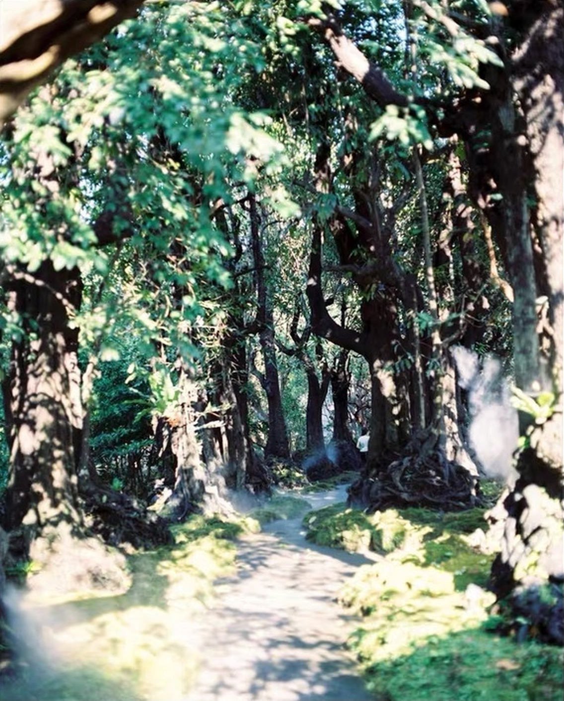
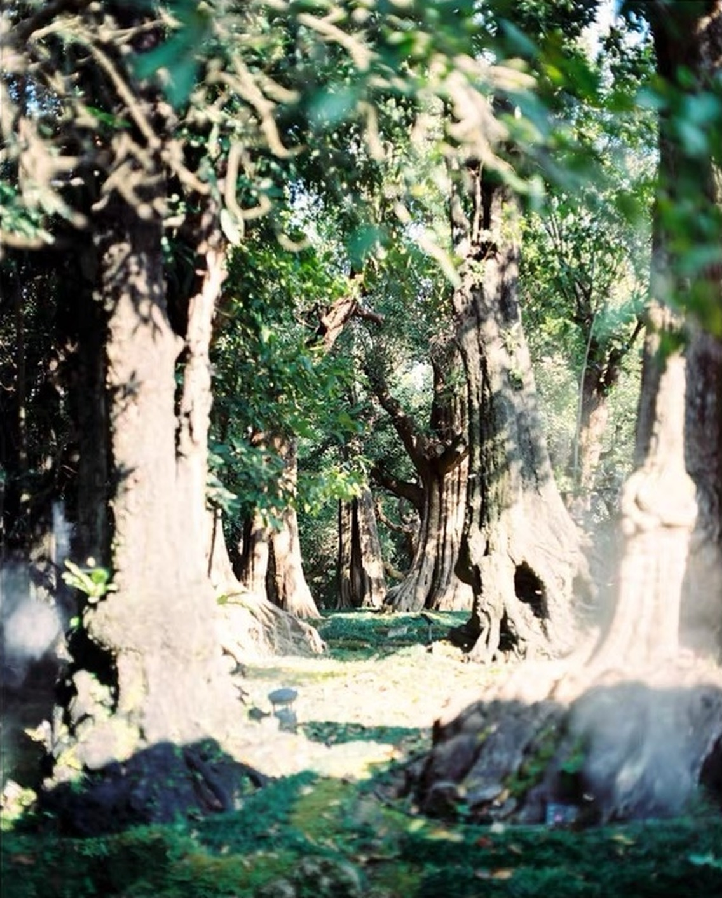
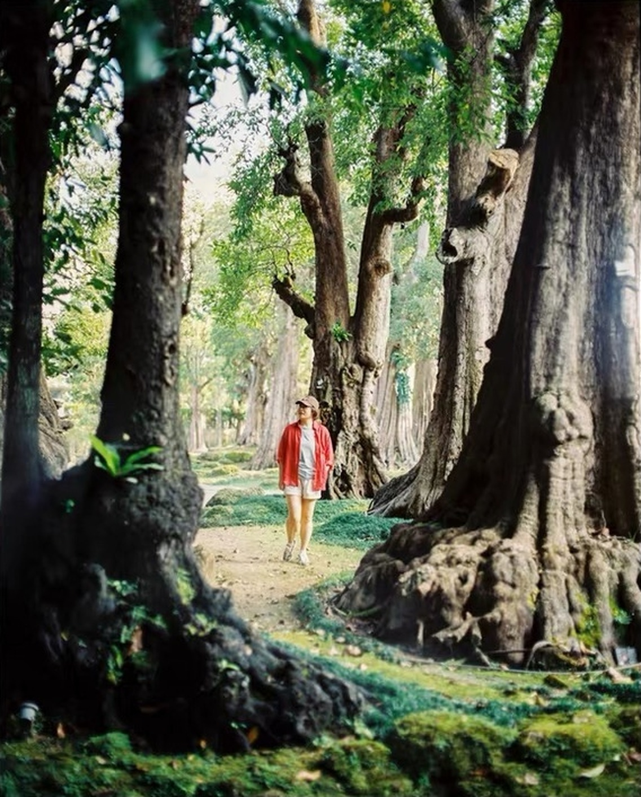
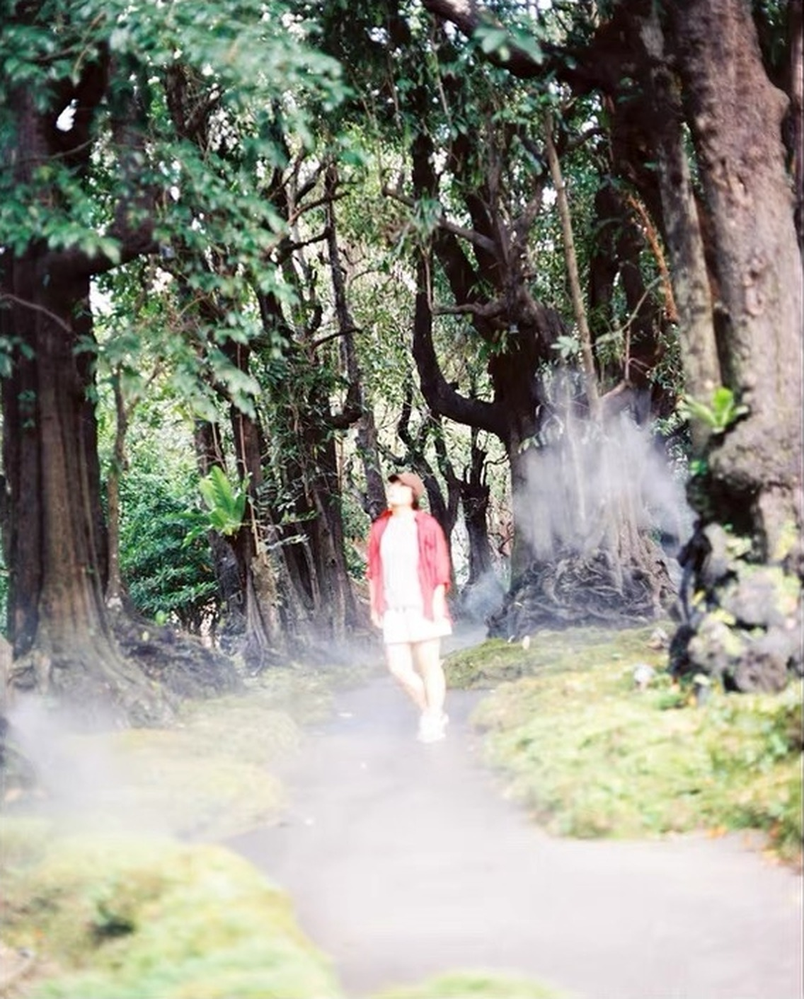
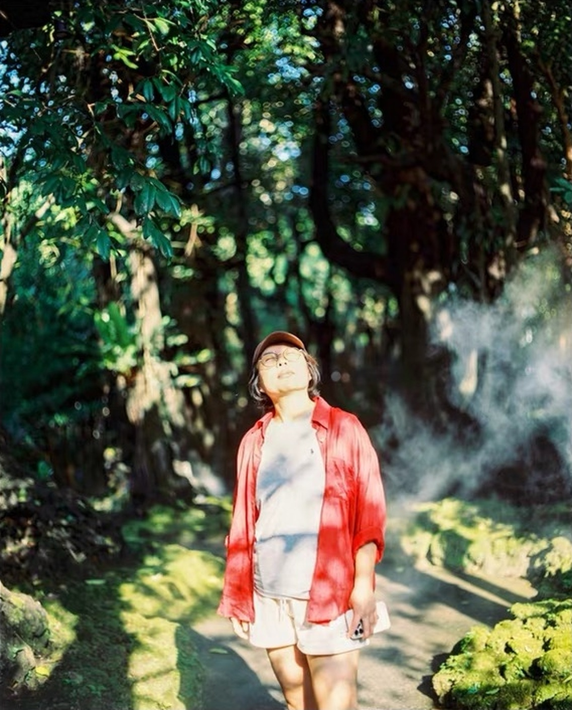
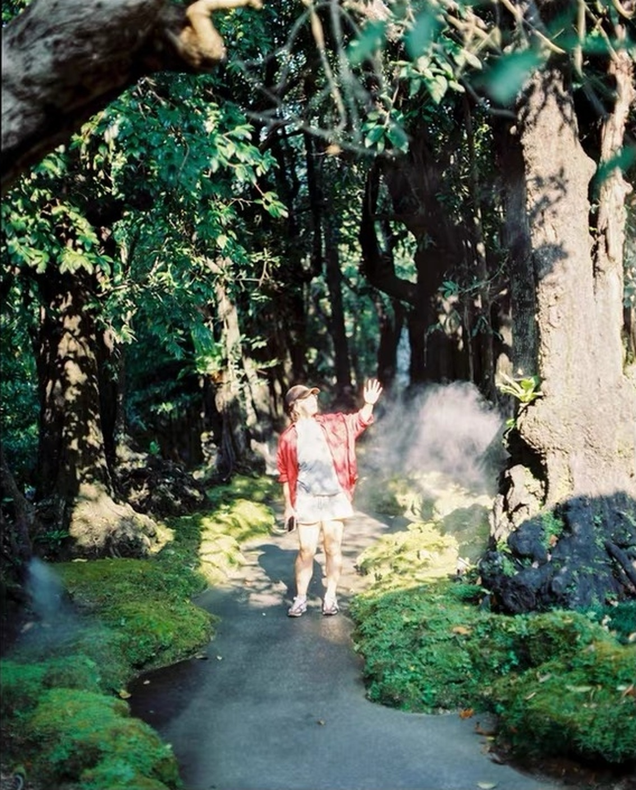
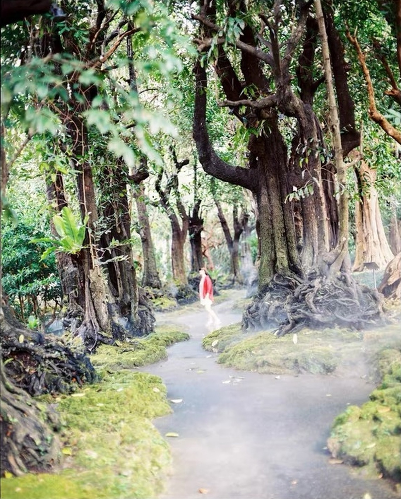
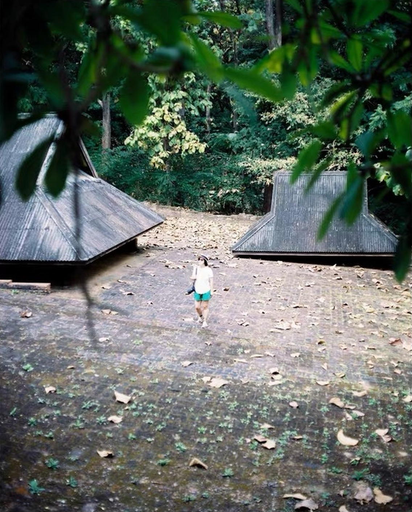

FIRST ROLL REVIEW
你的第一卷，我们一张一张看
每一页一张照片：先说清楚画面哪里有问题，再讲为什么，然后教你下次在现场怎么做，以及这台相机上具体该动哪里。
键盘左右键可以翻页。
整卷最大的问题，只有一条
主角太小，画面没有重点。
十几张看下来，问题不是曝光，也不是机器。
是每一张里，看的人不知道该看哪儿——人只有指甲盖大，景又大又杂，眼睛没有落点。
下次只记两件事：
要么走近，把人拍到占画面三分之一以上；
要么把人放成画面里唯一确定的重心，其他全退成背景。
第 01 张 / 12
庭院俯拍：人物太小，地面太空
构图 · 手动曝光 · 快门速度 · 原文件 IMG_8641-3.jpg
这张最要命的一点
人在这儿只有指甲盖大，观众第一眼看到的是空地，不是你的人。
怎么改往前走四五步，让人占到画面高度三分之一；或者干脆拍空院子的线条，不要挂一个看不清的人。

先看这张照片
人在哪里，占多大
你站在高处往下拍，两座屋顶左右各一个，人物走在中间的地面上。
人物只占画面高度的不到十分之一，下方到底边这一大片是落叶和苔藓地面，差不多占了整张的三分之一以上。
这片地面没有讲任何事，却把画面的重量全压在了底部。
上面的叶子
左上和右上各有一丛暗绿色的叶子，离镜头很近，所以是虚的，而且很黑很大。
叶子本身想法是对的，用来框住画面，但这里它们遮住了左边屋顶的尖，也把视线往上拉，和人物抢注意力。
亮度
白衣服是画面里最亮的地方，但屋顶的瓦楞和地面的落叶都还看得到层次，所以我不会说这张严重过曝。
整体是阴天那种灰灰的、平的光，反差不大，画面显得有点闷。
为什么会这样
这张的问题主要在取舍，不在机器
你想拍的是“一个人在空旷的院子里”，还是“这个人本人”？
这两种拍法的距离和站位完全不同。
现在是两头都想要，结果人不够大，院子也没拍出空旷感。
前景叶子虚，不代表手抖
叶子离镜头只有一两米，人物离镜头十几米，焦点只能落在一个距离上。
你对在人物身上，叶子自然就是虚的。
这是正常的景深，不是抖。
要判断有没有抖，应该看人物本人或者屋顶瓦楞的边缘是不是有重影。
目前判断不了的
人物实在太小，在这张图里我看不出她的脸有没有对实。
需要看原始扫描，放大到人物位置去看。
下次到现场，先这样做
先决定拍什么
如果要“空旷”，就留着大面积的地面，但让地面有东西：一条落叶形成的斜线，或者人物走到两座屋顶中间那条线上，让屋顶、人物成一个三角关系。
如果要“人”，就往前走几步或者换一个更近的位置，把下面一半地面去掉。
处理上面的叶子
退半步或者蹲低一点，让叶子只出现在一个角上，不要左右同时压下来。
叶子能框住画面，但不能遮住你想让人看的建筑。
让人停一下
人物走动的时候焦点会变。
先让她站在你选好的位置，你完成构图和对焦，再让她保持这个姿势，按下快门。
对应 Pentax 67 II：手摸哪里，眼睛看哪里
- ① 取景器屈光度对着一块明亮的墙面，转动取景器旁边的屈光度调节盘，直到对焦屏上的微棱镜纹理看起来最清楚。这一步是调你的眼睛，不是调镜头。如果这一步没做，你再怎么转对焦环，也分辨不出什么才是真的清楚。手册 P.31
- ② 镜头对焦环人物站定后，转镜头上的对焦环，一边看取景器中央的微棱镜区域。影像没对上的时候，微棱镜里的画面会闪烁、碎裂，对上之后变得稳定清晰。转过头再转回来，会比只往一个方向转更容易找到准确的位置。半按快门不会帮你对焦。手册 P.38
- ③ 锁定快门速度按住快门速度拨盘的锁定按钮，把拨盘从 A 转到 250（也就是 1/250 秒）。说明书 P.37 给的原则是：手持安全快门与镜头焦距成反比——75mm 镜头用 1/75 秒以上，105mm 用 1/150 秒以上。标准头用 1/250 是留了余量的稳妥起点。手册 P.51 手册 P.37
- ④ 用光圈环配合曝光半按快门，取景器里会出现曝光显示。转动镜头上的光圈环，让曝光指示回到中间。如果光圈开到最大还是显示偏暗，说明在这个光线下 1/250 秒做不到，需要换更亮的位置，或者让人站定后改用更慢的速度并稳住机身。手册 P.52
- ⑤ 按下快门左手托住机身和镜头底部，肘部靠近身体，对完焦之后不要再往前探身，用手指慢慢压下快门，不要戳。手册 P.37
洗出来以后怎么检查
拍完洗出来，先放大看人物的脸和白衣服的边缘。
如果人物是清楚的，那么前景叶子虚就只是景深，不用再担心。
如果人物是糊的，再对照后面几张的方法去排查是焦点、动作还是手抖。
下一次的小练习
下一次到这个院子，同一个位置拍两张：一张保持现在的构图；另一张往前走四五步，把下半部地面去掉一半，其他设置完全不变。
洗出来比较，你就明白构图的取舍对观感的影响有多大。
第 02 张 / 12
无人小路：路很好看，但没有落点
构图 · 景深 · 光圈优先 A 档 · 原文件 IMG_8643-2.jpg
这张最要命的一点
没有人的画面，也没给眼睛一个落点——路走到头是碎光斑，不知道要看什么。
怎么改选一棵树根、一个转弯当主角，占住画面一个角；或者放一个人在那条路上。

先看这张照片
小路本身
一条弯曲的小路从画面底部往深处走，两边是粗大的树干和苔藓，右边还有一团白色的雾。
这个场景很有氛围，路的弯曲给了视线一个方向。
视线走进去之后在哪里停
路的尽头是一片亮的、很碎的光斑，没有任何一个东西让眼睛落下来。
树干、叶子、光斑、苔藓，每一样都差不多一样强，画面就显得散。
亮度
路面和左下角的苔藓特别亮，阳光直接打在上面，像是白的。
上半部分的叶子也有很多亮斑。
底片在这种场景里，亮的地方容易吃掉细节，但从截图我没办法确认高光是不是真的丢了，需要看扫描原图。
清晰度
最前面的叶子是虚的，中间的树干相对清楚，最远处是软的。
整张没有明显的抖动重影。
为什么会这样
光斑太多是这张的主要问题
直射光穿过树叶落在路面上，形成了很多碎碎的亮点。
碎光会让画面显得乱，也让测光容易被带偏：相机看到的是一大堆亮点，可能把整体曝光压低，让暗的树干更暗。
缺少一个“主角”
这种没有人物的场景，需要自己制造一个落点：一棵形状特别的树、一个路的转弯、一束光、或者树根。
现在的画面上这些都有一点，但没有一个被突出。
下次到现场，先这样做
先找一个落点
走到路上，从不同位置看，哪个角度能让路的转弯、右边那棵树根、那团雾组成一个有重点的画面。
比如把相机放低一些，让路面从底边冲到树根，树根作为视觉重点。
减少上方杂叶
树冠上的碎叶子占了差不多一半画面，抬高相机角度之前先低头看一下，也许往上少拍一些，会让画面更干净。
选一个光线好的时候
直射光下碎光太强。
如果能等到云遮住太阳，或者选在树荫更均匀的时段，路面的光会柔和很多。
对应 Pentax 67 II：手摸哪里，眼睛看哪里
- ① 把相机放稳静态场景不需要手持。把相机装在三脚架上，快门慢一点没有关系。手册 P.37
- ② 快门拨盘转到 A按住锁定按钮，把快门速度拨盘转到 A。装有 AE 测光眼平取景器时才有这个档位。手册 P.48
- ③ 光圈环设到 f/8转动镜头光圈环到 8。这是景深和清晰度比较平衡的起点，不是唯一正确的光圈。手册 P.48
- ④ 半按快门，看取景器里的快门读数相机会自动给出快门速度。如果读到 1/30 或更慢，说明靠脚架才能稳住，手持会有风险。手册 P.49
- ⑤ 手动对焦对准你想让人看的东西，比如路的转弯处的一块树皮。转动镜头对焦环到微棱镜区域最清楚。手册 P.38
- ⑥ 用景深预览检查拨一下镜头上的景深预览拨杆，取景器会变暗，同时你能看到光圈收到 f/8 之后的真实清晰范围。看看近处叶子、中间转弯、远处树干分别有多清楚，然后把拨杆复位。注意：预览的时候测光会变成中央重点，所以看完要复位再确认曝光。手册 P.65
参考：原厂说明书 P.47 光圈优先 A 档 · P.64 景深预览（预览时测光自动切中央重点）· P.39 手动对焦
洗出来以后怎么检查
洗出来之后对比一下转弯处的清晰度和远处的清晰度。
如果远处还是软，下次试 f/11。
同时看亮斑处有没有细节，如果亮斑全白，下次试着用曝光补偿拨盘减少 1/3 到 2/3 挡再拍一张作对比。
下一次的小练习
在这条路上拍三张，其他不变，只变一件事：第一张 f/5.6，第二张 f/8，第三张 f/11。
每张记下快门速度。
洗出来你会直观看到光圈对前后清晰范围和快门速度的影响。
第 03 张 / 12
红衣小人物：颜色好看，人还没被托起来
人物与背景分离 · 对焦 · A 档 · 原文件 IMG_8642-2.jpg
这张最要命的一点
红衣在一片亮路面里只剩一块颜色，轮廓读不出来，人变成了背景里的红点。
怎么改让她走到深色树干前，走近到占画面三分之一；或者退到极远，把她缩成有意为之的一个小点。

先看这张照片
人物
穿红衣的人走在小路中间偏远处，只占画面高度的十分之一左右，红色是整张图里最醒目的一块颜色，这点是对的。
背景
人物身后是一片亮的路面和浅色的树干，红衣服下半身和这片亮色混在一起，腿几乎看不清楚。
右边的大树
右侧大树根盘根错节，纹理非常丰富，体量也大，比人物更吸引眼睛。
下半部的白雾
路面和右下角有一层浅白的雾状，对比很低。
如果现场有喷雾，这是一个可以利用的元素，但它同时让路面看起来发灰，没什么层次。
为什么会这样
人小，所以更需要干净的背景
小人物的照片能不能成立，看的是她的轮廓能不能清楚地从背景里读出来。
现在她的腿被亮路面吃掉，轮廓不完整。
红色吸引了注意，但没有解决位置问题
颜色能吸引眼睛，但眼睛看过去之后，还要看到“一个人”。
这需要轮廓、姿势和背景配合。
焦点是否在她身上，看不出来
人太小，脸看不清。
她身上的细节比旁边树干软一些，但这也可能是因为她在走动。
只靠这张图，我没法区分是焦点不准还是动作模糊。
下次到现场，先这样做
让人物走到暗背景前
在这条路上，她左边或者右边有颜色深一些的树干和苔藓。
让她站在深色背景前，红衣和白腿的轮廓都会清楚很多。
先拍一张近的
你站得离她近一些，把人物放大到画面高度的三分之一左右，这样你更容易看清取景器里的对焦。
熟练之后，再回到远景。
让她停住
小人物如果同时在走，焦点和动作的问题会叠在一起，没办法排查。
先让她站着不动。
对应 Pentax 67 II：手摸哪里，眼睛看哪里
- ① 屈光度确认在明亮背景下转屈光度调节盘，让对焦屏纹理最清楚。手册 P.31
- ② 快门拨盘转到 A按住锁定按钮，转到 A。手册 P.48
- ③ 光圈环设到 f/5.6这个光圈对人物前后一两步的距离变化有一定容忍度，同时快门不会太慢。手册 P.48
- ④ 手动对焦在人物身上转对焦环，直接看人物身上的细节，比如衣服边缘。不要因为旁边的树皮纹理更容易看清，就把焦点对在树上。人物小到看不清时，先靠近一些。手册 P.38
- ⑤ 半按快门，读快门速度如果读数慢于 1/125，手持就需要谨慎：可以开大光圈，换个更亮的位置，或者靠在树上稳住机身。手册 P.49
- ⑥ 测光模式先用六分区这是比较不容易出错的模式。点测光只会测取景器中央很小的一块，在人物很小的时候，它测到的很可能是路面或者树干，不是人。手册 P.35
洗出来以后怎么检查
洗出来之后看人物腿部的轮廓是不是比这张清楚，红衣边缘是不是锐利。
如果人物清楚，说明焦点和快门没问题，这张的问题就只是构图。
下一次的小练习
同一个位置，让她分别站在亮路面前和深色树干前，各拍一张，其他完全不变。
对比两张里红衣的轮廓。
第 04 张 / 12
树林：两边的树太抢，中间没有主角
主体选择 · 景深 · 景深预览 · 原文件 IMG_8649.jpg
这张最要命的一点
左右两棵大树都比中间的东西抢眼，眼睛被亮树干抓走，中间空着。
怎么改挑一棵当主角，让它占住三分之一画面；或者把人放进中间的空处当落点。

先看这张照片
构图
画面是一片树林，左边一棵很粗的树干近在眼前，右边一棵白色的树干，中间深处还有几棵树，地面是绿色的苔藓。
深度有了，层次也有了。
最抢眼的地方
左边那棵树干受光，是亮的，纹理又粗，吸走了很多注意力。
右边那棵树底部被一片发白的东西盖住，像是雾，也可能是别的东西，也很亮。
中间
中间远处的树比较暗，也比较小，被两边压着，没有成为重点。
清晰度
左边近处的树干相对清楚，树冠的叶子是虚的、散的，远处的树也比较软。
为什么会这样
你想拍什么，画面没有告诉我
林子里没有哪一棵树被选出来。
观众的眼睛先被左边亮树干抓走，然后沿着树干往上到虚的叶子，就丢了。
右边的白色
从截图看，我不能说它是漏光，也不能说它一定是雾。
你拍的时候在场，应该有印象：那里有没有喷雾、水汽，或者太阳是不是正好打在镜头上。
这个问题要靠你自己回忆来回答。
下次到现场，先这样做
选一棵主树
站在林子里转一圈，找一棵形状最有意思的树：树干歪的、树根大的、有洞的。
然后让这棵树站在画面的主要位置，其他树作为陪衬。
换位置
往左或往右走半步，让主树和后面的树错开，不要重叠成一团。
留意镜头前面的光
如果太阳从斜后方打到镜头，会产生一层发白的光雾，让对比降低。
用手或者帽子在镜头旁边挡一下杂光，看取景器里的画面有没有变化。
对应 Pentax 67 II：手摸哪里，眼睛看哪里
- ① 屈光度确认同前面几张。手册 P.31
- ② 快门拨盘转到 A，光圈环设到 f/8树林里想让树干从近到远都比较清楚，f/8 是一个可以试的起点。手册 P.48
- ③ 半按快门，看读数树林里光线暗，f/8 下的快门很可能只有 1/60 或更慢。这时候不要手持硬拍，靠着树，或者上脚架。手册 P.49
- ④ 手动对焦主树把焦点对在主树树皮上有明显纹理的地方，不是对在最近的叶子上。手册 P.38
- ⑤ 景深预览拨一下镜头上的景深预览拨杆，看主树前后其他树的清晰程度。看完复位。手册 P.65
- ⑥ 如果有脚架：反光板预升先把过片扳手推到底（没过片拨预升杆是不起作用的），再把机身前侧的 MLU 预升杆往上拨，反光板抬起、取景器变黑。此时曝光读数会被自动锁定，所以构图、对焦、测光必须在拨杆之前全部做完。然后用快门线按下快门。它专治慢门机震，不适合抓拍。手册 P.66
洗出来以后怎么检查
洗出来之后，先找主树，看它的树皮纹理是否清楚。
如果主树清楚但左右的树糊，是景深的问题，下次试 f/11。
如果整张都有重影，才是抖动的问题。
下一次的小练习
找一棵你喜欢的树，围着它拍三张：一张从左边，一张从正面，一张从右边。
看哪一张里它最突出。
第 05 张 / 12
红衣人物框景：框景成立，人物还可以更实
环境人像 · 受光 · 手动对焦 · 原文件 IMG_8650.jpg
这张最要命的一点
框景已经成立，但人在框里还是偏小，脸看不清，画面缺一个真正的重点。
怎么改保持这个框架，走近两三步让人占画面一半；或者让她靠近一侧门柱，形成明确的重心。

先看这张照片
构图
两边各有一棵大树干，像一对门柱，把红衣服的人框在中间的小路上。
人物的位置在画面中央偏上，尺度合适，既看得到她，也看得到周围的树。
这是一张构图比较完整的照片。
人物
她站得直，脸朝向镜头，戴帽子，红色外套里面是浅色上衣。
红色和周围的绿色对比很好。
需要改的地方
两侧的树体量非常大，左边那棵特别黑，右边那棵又特别亮，两边的重量不平衡。
人物的脸被帽檐盖住一部分，细节在这张图里不够明显。
清晰度
人物身上的线条比周围的树皮稍微软一点，但我从截图看不出明确的失焦。
为什么会这样
这是这几张里最接近“成立”的
说明你已经会用框景、会用颜色。
后面要做的是把人物拍得更实、更有存在感，而不是换一个场景。
光线
人物所在的位置有一半在阴影里，一半有斑驳的光。
脸部的光要均匀，才能显出五官。
下次到现场，先这样做
找均匀的光
让她往前走半步或后退半步，找脸上没有光斑、没有帽檐阴影的位置。
让她抬一点头
帽檐很容易遮住眼睛。
让她下巴稍微抬起来，眼睛露出来，人物会更有精神。
站稳，不再移动
你选好位置之后，对焦、按快门之间尽量不要前后晃动。
对应 Pentax 67 II：手摸哪里，眼睛看哪里
- ① 先把快门固定到 1/250按住锁定按钮，把快门拨盘转到 250。手册 P.51
- ② 半按快门，转光圈环取景器里会有曝光指示，转镜头光圈环让指示居中。树林里可能要开到 f/4 或更大。手册 P.52
- ③ 手动对焦在脸上转对焦环，看取景器中央，对准眼睛附近的位置，让微棱镜里的画面稳定。手册 P.38
- ④ 再确认一次对完焦，不要再前后动，再看一眼取景器里是不是仍然清楚。手册 P.38
- ⑤ 轻按快门左手托住镜头，右手轻压。手册 P.37
洗出来以后怎么检查
洗出来之后，放大看人物的眼睛、帽檐边缘、红外套的纽扣。
如果这些地方是清楚的，说明你的流程是正确的。
下一次的小练习
用同样的构图，让她换三个位置，各拍一张，比较脸上的光。
你会发现有一个位置明显更好看。
第 06 张 / 12
庭院俯拍（再讲一次）：焦点和景深
对焦 · 景深 · 距离 · 原文件 IMG_8641-2.jpg
这张最要命的一点
同样的画面：人太小，所以对没对准根本看不出来。
怎么改先走近拍一张能看清脸的，把对焦练准；再回到这个远景位置。
这张和第 01 张是同一个画面。第 01 张讲构图，这里单独讲焦点和景深：人离得远的时候，怎么知道自己对准了。

先看这张照片
再看一遍画面
人物在场地中央，离镜头比较远，两座屋顶在她左右两边的距离大致和她差不多。
叶子在最前面。
清晰度分布
屋顶的瓦楞和地面落叶看起来都还算清楚，人物看不出来，近处叶子是虚的。
为什么会这样
远处的人为什么难对
人物离你十几米远，在取景器里很小。
微棱镜里能看到的细节有限，眼睛很难分辨“对上了”和“差一点”。
远距离的景深其实比较深，f/5.6 的时候人物前后几米都可能是清楚的，所以看起来“好像对上了”并不代表真的对准人物。
焦点落在哪里
如果你对准了屋顶的瓦楞，因为屋顶和人物的距离差不多，人物看上去也不会太糊。
但如果你的焦点对在了离人更远的树上，人物就会偏软。
拍完发现虚的三种可能
一是焦点落在别的位置；二是人物在动；三是你自己在动。
要分清，需要多拍几张对比。
下次到现场，先这样做
用一个参照物辅助
对焦前，让人物站在一个有清楚纹理的东西旁边，比如屋顶的柱子，对焦在柱子上，也就是对焦在人物所在的距离。
拍两张
同一个位置，对焦完拍一张，再重新转一次焦环对焦，再拍一张。
洗出来比较两张谁更清楚。
对应 Pentax 67 II：手摸哪里，眼睛看哪里
- ① 转对焦环到人物所在的距离别在最大光圈的时候做判断，因为大光圈的取景器更亮但景深更浅，对焦位置更敏感。手册 P.38
- ② 光圈环设到 f/5.6 或 f/8在手持允许的范围内，稍微收一点，让前后容错多一些。手册 P.48
- ③ 景深预览按一下景深预览拨杆，看人物、屋顶的清晰程度，然后复位。手册 P.65
- ④ 快门半按快门读数，如果慢于 1/125，手持就要靠稳；如果有脚架，上脚架。手册 P.49
洗出来以后怎么检查
洗出来对比两张，哪张人物的脸更清楚。
如果两张都糊，那更可能是人物动或你动。
下一次的小练习
找一个固定的柱子或标牌，站在离它 10 米处，拍三张，分别对焦在柱子上、对焦在柱子前 2 米、对焦在柱子后 2 米，f/5.6。
洗出来你就明白了景深的实际范围。
第 07 张 / 12
红衣远景：人物偏软，先排查原因
对焦 · 动作模糊 · 浅白雾气 · 原文件 IMG_8646.jpg
这张最要命的一点
人占三分之一，但她整个人都是软的，画面没有一处是实的，等于没有重点。
怎么改让她站定、你上脚架，先保证有一处绝对清楚；重点是清楚的那个人，不是更多的景。

先看这张照片
人物
红衣的人站在小路中间，占画面高度约三分之一。
她的脸、衣服边缘、腿都比较软，没有任何一处是锐利的。
这是这几张里最需要先解决的问题。
周围
两边树干的纹理比她清楚得多，尤其是左边那棵暗的树干，纹理锐利。
下方
路面和苔藓上有大片浅白的雾状，一直盖到画面底部，对比很低，看起来发灰、发飘。
为什么会这样
人糊、树清楚，说明相机本身没问题
如果是整台相机在抖，所有东西都会糊。
现在树是清楚的，只有人是软的，这提示焦点或者人物动作是问题的来源。
可能的原因
焦点对在了她身后的树上；对完焦后她走动了，或者你向前后挪动了；快门速度不够，她的动作被记录下来。
这三种情况看起来很像，从截图无法区分。
白雾
如果现场有喷雾，这就是画面的一部分。
它覆盖面积太大，让路面没有层次。
下次到现场，先这样做
让她站着不动
不要边走边拍。选好位置，让她站住，微微放松。
改变一下雾的位置
等雾飘到她身后或旁边，而不是盖在路面上，画面会好很多。
对应 Pentax 67 II：手摸哪里，眼睛看哪里
- ① 屈光度对着明亮处调到纹理最清楚。手册 P.31
- ② 快门固定在 250按住锁定按钮，转到 250。手册 P.51
- ③ 光圈环配合曝光半按快门，转光圈环让曝光指示居中。浅色衣服多，可以留意曝光有没有偏亮。手册 P.52
- ④ 对焦在人物身上转对焦环，直接看她身上的细节，比如红外套的边缘或者衣服的褶皱。宁可多转几次，转过头再回来。手册 P.38
- ⑤ 再拍一张脚架对照同一个位置，上脚架，同样的设置，让她保持同样姿势，再拍一张。对比这两张，你就知道问题是你的手还是别的。手册 P.37
- ⑥ 反光板预升（可选）仅在脚架拍摄、人物完全静止时使用。预升之后取景器会变黑，要提前完成构图、对焦和曝光。手册 P.66
洗出来以后怎么检查
洗出来之后，先对比有脚架和没脚架两张。
如果脚架那张清楚，手持那张糊，说明是持机问题。
如果两张都糊，问题在焦点。
下一次的小练习
下一卷里专门留两张：同一个人，同一个位置，一张手持 1/250，一张脚架 1/250，对焦、光圈都不变。
第 08 张 / 12
红衣近景：人物清楚了，现在要解决脸上的光
受光 · 曝光 · 光圈优先 · 原文件 IMG_8645.jpg
这张最要命的一点
这张是整卷最接近成立的一张：人够大，背景也退开了。
怎么改保持这个距离，只把脸上的光斑解决掉——这是唯一需要改的地方。

先看这张照片
人物
她戴帽子和眼镜，抬头看向上方，红色外套里面是浅色上衣。
这张里人物比较大，眼镜和帽檐的边缘是清楚的，背景虚化得很自然。
这是一个进步。
光
脸上和上衣上有很多树叶的碎影，一块亮一块暗。
帽檐又在额头和眼睛上投下阴影。
亮度
背景很深，人物的脸、浅色上衣、外套的亮部又比较亮，差距大。
脸部的细节，比如鼻子、嘴，在截图上显得比较薄。
为什么会这样
这张的问题是光，不是焦点
焦点看起来没什么问题。真正要处理的是人物站在什么光里。
相机看到了什么
背景是暗的树林，人物是亮的。
如果相机以整体平均为依据来曝光，它会往“更亮”的方向给你，于是脸被推亮了。
这是测光的常见情况，不代表相机坏了。
也有可能是你测光时对着暗处
如果你用点测光测了旁边的暗树干，再回来拍人，同样会让人物偏亮。
下次到现场，先这样做
换到均匀的阴影里
让她走到一块完整的树荫下，不要在光斑里。
脸、上衣上的光会均匀很多。
抬一点下巴
她抬头的姿势很好看，但帽檐遮住了眼睛。
可以让她稍微低一点点，眼睛露出来。
对应 Pentax 67 II：手摸哪里，眼睛看哪里
- ① 快门拨盘转到 A按住锁定按钮，转到 A。手册 P.48
- ② 光圈环设到 f/4 或 f/5.6背景虚化已经不错，所以光圈不用开太大。f/4 到 f/5.6 对近景人像比较稳。手册 P.48
- ③ 测光模式用六分区避免测光被暗背景拉偏。手册 P.35
- ④ 半按快门，看读数如果读数很快，比如 1/500，说明光线足够，可以适当开大光圈获得更浅景深；如果读数慢于 1/125，手持要小心。手册 P.49
- ⑤ 曝光补偿对照按住曝光补偿拨盘的释放按钮，转到 -2/3，拍一张作对比，拍完马上归零。曝光补偿拨盘用完要归零，否则会影响后面所有照片。手册 P.55
- ⑥ 不要用点测光测暗处再拍亮脸如果要用点测光，就把取景器中央对准脸，不要对准背景。手册 P.57
洗出来以后怎么检查
洗出来之后看脸和浅色上衣有没有细节。
比较补偿 0 和 -2/3 两张，选哪一张好，下次就记住在这个光线下用什么补偿。
下一次的小练习
同一个位置，一张在光斑里，一张在均匀的树荫里，其他设置不变，各拍一张。
对比脸上的光，你会知道光比相机设置更重要。
第 09 张 / 12
举手人物：动作有了，但人被亮背景吃掉
动作 · 背景分离 · 快门速度 · 原文件 IMG_8644.jpg
这张最要命的一点
动作有了，但人和后面的雾一样亮，轮廓糊成一片，重点被光吃掉。
怎么改让她往左两步，背后换成深色树干；手举到一半停住，你按快门。

先看这张照片
画面
她站在小路上，右手举向半空，像是在碰那团雾，旁边是一棵被阳光照亮的大树。
路把视线引到她，动作和雾产生了关系，这是这几张里最有故事性的一张。
问题
她的脸、手、浅色外套和后面的雾都很亮，几乎是同一个亮度，轮廓分不开。
右边的大树干也很亮，体量大，抢眼。
上方
左上角一根粗树枝伸进画面，和上面的叶子一起形成了一个沉重的顶。
清晰度
她的手比较软，边缘有一点点虚。脸太小，看不清。
为什么会这样
手软
举手的动作是动态的，如果在按下快门时手正在移动，1/125 的快门可能都不够。
如果她举起来之后停住，1/250 通常没有问题。
轮廓分不开
亮的人对亮的背景，没有明暗对比，只有颜色对比，红衣服能撑一点，但浅色部分都消失了。
下次到现场，先这样做
换她站的位置
让她往左走两步，背后变成深色的树干和苔藓，雾在她旁边。
拍动作的过程
要拍手正在动的瞬间，快门要更快，1/500 以上，同时要重新调整光圈。
对应 Pentax 67 II：手摸哪里，眼睛看哪里
- ① 快门固定在 250停住的动作。要拍动作过程的话，转到 500。手册 P.51
- ② 光圈环配合曝光半按快门，转光圈环让曝光指示居中。从 250 改到 500，要开大一挡光圈。手册 P.52
- ③ 手动对焦在脸或手上她举手的时候脸和手的距离大致相同，对在脸上就可以。手册 P.38
- ④ 等雾雾的形状一直在变，等到它在她手附近、但没有盖住脸的时候按快门。
- ⑤ 不要用反光板预升预升之后取景器变黑，不适合抓动作。手册 P.66
参考：原厂说明书 P.49 手动曝光（M）· P.50 快门速度设定 · P.65 反光板预升（抓拍不可用）
洗出来以后怎么检查
洗出来看手的边缘。
如果手清楚，说明 1/250 够了；如果手糊，下次提高到 1/500。
下一次的小练习
让她重复同样的举手动作三次，你分别用 1/125、1/250、1/500 拍一张，洗出来对比手的清晰度。
第 10 张 / 12
红衣小人物（再讲一次）：雾、对比和测光
对比 · 测光 · 杂光排查 · 原文件 IMG_8642.jpg
这张最要命的一点
同一个画面：雾把路面糊白，人更小了，重点被雾稀释。
怎么改让雾退到她身后当背景，人走到前面来；或者干脆等雾散。
这张和第 03 张是同一个画面。第 03 张讲人物与背景分离，这里单独讲下半部的浅白雾气和测光该怎么处理。

先看这张照片
白色的东西在哪里
右下角和整个路面都有一层浅白的雾状，越靠近镜头越明显。
树干根部也被盖住了一部分，看起来对比很低。
人物
红衣人物在路的远处，被雾轻轻盖着，所以显得有点飘。
为什么会这样
先分辨是什么
白色的东西可能是现场喷出的水雾，可能是镜头前的杂光，也可能是扫描时的处理。
你拍的时候在现场，应该有印象。
不要凭这张截图下定论。
对测光的影响
大面积的亮色会让相机觉得“很亮”，而把整体曝光压低，导致树和人暗下去，雾却更白。
下次到现场，先这样做
判断是不是杂光
你拍的时候太阳在哪个方向？
如果阳光是从镜头斜前方或侧面照来，可能有杂光。
用手或者帽子在镜头上方挡一下，看取景器里的画面有没有变得更有对比。
利用雾
如果是真雾，等它飘到树根或人物后面，作为背景。
对应 Pentax 67 II：手摸哪里，眼睛看哪里
- ① 用目镜遮光装置如果你的眼睛离开取景器（比如脚架上摆姿势），要把目镜遮光装置盖上，避免从目镜漏进来的光影响测光。手册 P.44
- ② 测光模式用六分区不要用点测。手册 P.35
- ③ 如果要锁定曝光在 A 档下，对你想要的部分测光，按一下机背左侧的曝光记忆按钮，取景器里会出现锁定标记，再重新构图。松开按钮后读数仍保留约 20 秒；再按一下按钮可以取消；每拍完一张也会自动取消。手动曝光档位下这个功能不起作用。手册 P.58
- ④ 曝光补偿雾多的场景，可以试 +1/3，因为相机往往会压暗。拍完立即归零。手册 P.55
参考：原厂说明书 P.44 目镜遮光帘 · P.55/56 测光模式 · P.57 曝光记忆（锁定约 20 秒，M 档无效）· P.54 曝光补偿
洗出来以后怎么检查
洗出来对比有补偿和没补偿的两张，哪张的树干和苔藓更有层次。
下一次的小练习
下次遇到有雾的场景，同一个构图拍三张：补偿 0、+1/3、-1/3。
你会知道在这类光线下相机的倾向。
第 11 张 / 12
无人小路（再讲一次）：脚架工作流和亮斑
脚架流程 · 反光板预升 · 亮斑 · 原文件 IMG_8643.jpg
这张最要命的一点
空景本身可以成立，但画面里没有一样东西是主角，全都是配角。
怎么改给这条路一个主角：一段特别的树根、一束光、或者一个人。
这张和第 02 张是同一个画面。第 02 张讲构图和景深，这里按拍摄顺序讲一遍从架脚架到按快门的完整流程。

先看这张照片
画面
路面和左下角的苔藓很亮，右边有雾，上面叶子有很多亮点。
适合怎么拍
没有人物，场景是静止的，是一个很适合练习脚架流程的画面。
为什么会这样
为什么脚架更适合
你想用 f/8 以上的光圈，树林里快门会很慢。
手持拍慢快门，抖动会让整个画面都软。
脚架把这个因素去掉，你才能判断焦点准不准。
亮斑
碎光会让测光忽高忽低。
你在不同的位置半按快门，读数会不一样，这是正常的。
下次到现场，先这样做
构图
在取景器里看好，路的转弯在哪里，画面的边缘有没有不想要的东西。
对应 Pentax 67 II：手摸哪里，眼睛看哪里
- ① 快门拨盘转到 A，光圈 f/8同第 02 张。手册 P.48
- ② 手动对焦对准路的转弯。手册 P.38
- ③ 景深预览按一下，看清晰范围，看完复位。手册 P.65
- ④ 半按快门，确认曝光在不同的位置半按几次，看读数范围。如果上方亮斑让读数偏小，可以用曝光补偿拨盘加 +1/3 对比。手册 P.49
- ⑤ 目镜遮光眼睛离开取景器之前，把目镜遮光装置盖上。手册 P.44
- ⑥ 反光板预升先过片，再把预升杆往上拨，取景器变黑，曝光随之锁定。等 2-3 秒让机身稳定，用快门线按下快门。注意：预升一旦设定，正常方式无法取消，电池耗尽时该功能也不工作。手册 P.66
洗出来以后怎么检查
洗出来对比有预升和没预升的两张，在放大的情况下看树皮细节。
下一次的小练习
同一个场景，拍两张：一张不用预升，一张用预升，其他设置完全一样，比较清晰度。
如果差别很小，说明在这个快门速度下反光板震动影响不大，以后不必每次都用。
第 12 张 / 12
庭院俯拍（第三次）：曝光和测光
测光 · 曝光 · 曝光补偿 · 原文件 IMG_8641.jpg
这张最要命的一点
阴天光平、人又小，整张没有明暗层次也没有重点，所以显得闷。
怎么改这种光必须靠人够大或线条够强撑起来，否则拍出来一定平。
这张和第 01、06 张是同一个画面。第 01 张讲构图，第 06 张讲焦点，这里讲曝光：阴天、大面积地面、小块白衣服，相机会怎么想。

先看这张照片
光
阴天的光，灰、平、对比低。屋顶深灰，地面灰绿，叶子深绿。
为什么会这样
相机怎么想
画面里大面积是深色的屋顶和叶子、灰色地面，相机的测光有自动往中灰靠的倾向。
你拍的时候，相机给出的曝光可能让整体偏暗一点，因为深色面积大。
这是常见的。
所以不能说整卷过曝
这张反而更可能是略微偏暗。
如果整卷底片的所有照片都偏亮，那更应该去排查 ISO 设置和曝光补偿。
下次到现场，先这样做
留意光线
阴天的光很平，想要有层次，要靠构图和人物的衣服颜色。
等一等
如果云有变薄的时候，会有一点方向光，画面会立体很多。
对应 Pentax 67 II：手摸哪里，眼睛看哪里
- ① 先看曝光补偿拨盘确认指在 0。如果拨盘被碰到，整卷都会偏。手册 P.55
- ② 再看 ISO按机背的感光度按钮，核对液晶屏上的 ISO 与胶卷盒上一致。手册 P.22
- ③ 测光模式用六分区在这种大面积均匀的场景下，它的表现比较稳定。手册 P.35
- ④ 如果想让画面通透一点在 A 档下，按住曝光补偿拨盘的释放按钮，转到 +1/3，拍一张。拍完马上归零。手册 P.55
- ⑤ 记录每张记下光圈、快门、补偿，洗出来之后对照。
参考：原厂说明书 P.54 曝光补偿 · P.24 ISO 设置 · P.36 六分区测光
洗出来以后怎么检查
洗出来之后，对比 0 和 +1/3 两张，看地面和屋顶的层次、白衣的细节。
下一次的小练习
在阴天的光下，同一个构图拍三张：-1/3、0、+1/3，记下，洗出来对比，你会找到自己喜欢的曝光倾向。
专页
胶卷与 ISO：怎样让亮度刚刚好
买什么 · 怎么设 · 设错会怎样
这一页不看你的照片，只讲胶卷和相机设置怎么配。我们现在还不知道你用的是哪一卷胶卷，所以先告诉你怎么排查，不下“过曝”的结论。
先把概念弄清楚
先分清两个数字
买胶卷的时候你会看到两类数字。
120 是胶卷的规格，决定它能不能装进这台相机，67II 用 120 一卷拍 10 张（220 胶卷是 21 张，见说明书 P.76 规格页）。
200、400 这类是感光度，也就是 ISO，决定这卷胶卷对光有多敏感。
两者没有关系，不要混在一起。
ISO 到底是什么
可以先这样理解：ISO 400 的胶卷，需要的光只有 ISO 200 的一半。
同样的光圈，ISO 400 可以用快一倍的快门。
比如 200 的胶卷在 f/5.6 用 1/125 秒，400 的就可以用 1/250 秒。
对手持拍树林来说，这多出来的一挡快门非常有用。
400 会不会太亮
不会。
ISO 数字大不代表照片会更亮。
你按它的 ISO 去测光，再按测出的光圈快门去拍，不管是 200 还是 400，亮度都应该是正常的。
只有“胶卷是 400，相机却设成了 100”这种不一致，才会让照片偏亮。
相机设错会怎样
67II 不会自动读胶卷的 ISO，是你手动设置的。
机内测光按你设的 ISO 给你光圈快门的建议。
胶卷 ISO 与相机 ISO 不一致，会怎样
按相机测光的建议去拍时，会发生这些事：
| 胶卷实际 | 相机设成 | 结果 |
|---|
| 400 | 400 | 正常 |
| 400 | 200 | 多曝光一挡，偏亮 |
| 400 | 100 | 多曝光两挡，明显偏亮 |
| 200 | 400 | 少曝光一挡，偏暗 |
| 200 | 100 | 多曝光一挡，偏亮 |
原因是相机以为这卷胶卷“不太敏感”，就建议你给更多光。所以最稳的做法是：盒子写多少，机身就设多少。
在 67II 上设置 ISO
- 1打开机身电源。手册 P.22
- 2按住机背的感光度设置按钮，液晶屏上的 ISO 数字会开始闪烁。手册 P.22
- 3按住不放，同时拨动机身前面的感光度设置杆。往一个方向拨数字变大，往另一个方向拨数字变小，按住设置杆不放数字会连续变化，每次变化三分之一挡。手册 P.22
- 4调到和胶卷盒上一致的数字，松开按钮。手册 P.22
- 5看一眼液晶屏，确认数字。电源打开时，快门速度和感光度会一直显示在液晶屏上，随时可以核对。手册 P.22
- 6把胶卷盒上写着型号和感光度的那一小片纸，塞进机背的备忘夹里，这样拍到一半忘了装的是什么，也能马上看到。手册 P.27
下一卷买 200 还是 400
ISO 200
白天户外、光线充足的时候。
颗粒更细，但在树林里手持，快门容易不够。
ISO 400
树荫、树林、手持拍人物。
多一挡快门，抖动和动作模糊的几率更低。
我建议你这类题材下一卷先用 400。
不要在拍的过程中把机身 ISO 随手调高当作“提亮”。这台是胶片机，整卷胶卷的感光度是固定的，你改机身数字，只是改变了测光的参考，并不会让胶卷变得更敏感。
这一页用的控件，在说明书第几页
下面每一条都能点，直接跳到说明书站那一页。
页码是这个说明书站上显示的页码（第 N / 80 页），不是纸本印刷页码。
| 要动的部件 | 说明书 | 什么时候用 |
|---|
| 屈光度调校转盘（目镜旁） | P.31 | 第一件事：让取景器里的微棱镜对你是清楚的 |
| 微棱镜 / 磨砂屏对焦 | P.38 | 转对焦环，影像不再闪烁、碎裂 |
| 持机姿势与安全快门 | P.37 | 手持时快门不能慢于 1/焦距 |
| 光圈先决自动曝光（A 档） | P.48 | 快门拨盘按着锁钮转到 A |
| A 档下半按显示快门速度 | P.49 | 半按快门，取景器里读出相机给的速度 |
| 手动测光模式（M） | P.50 | 自己定光圈和快门的组合 |
| 手动快门速度设定 | P.51 | 按着快门转盘锁，转到 250 / 500 |
| 条码图表（M 档曝光指示） | P.52 | 半按快门，看虚点在中央还是偏了 |
| 曝光补偿转盘（−3 ~ +3EV） | P.55 | 按住释放钮才转得动；用完归零 |
| 六幅面多区域测光 | P.35 | 最不容易出错的默认模式 |
| 中央偏重测光 | P.56 | 主体在中间、背景简单时 |
| 重点（点）测光 | P.57 | 只测观景窗中央极小范围，配合记忆锁 |
| 曝光记忆锁（ML 按钮） | P.58 | 先测光锁定约 20 秒，再构图；M 档无效 |
| 接目镜遮光片 | P.44 | 眼睛离开取景器时，防止杂光影响测光 |
| 景深预览杆（镜头上） | P.65 | 收光圈看真实清晰范围；预览时测光自动切中央偏重 |
| 反光镜锁（MLU） | P.66 | 必须先过片；锁上后曝光固定；适合脚架静物 |
| 胶卷速度设定（ISO） | P.22 | 机背按钮 + 机身前面设定杆，ISO 6–6400 |
| 胶卷备忘插座 | P.27 | 把胶卷盒盖纸片插机背，随时知道装了什么 |
核对依据：原厂中文说明书（80 页扫描）逐页 OCR 比对，不是凭记忆。所用机型为 PENTAX 67II 中片幅单镜反光相机（120 胶卷 10 张 / 220 胶卷 21 张）。
让亮度刚刚好的流程
- 确认胶卷盒上的 ISO，机身设成一样的数字。
- 曝光补偿拨盘指在 0。
- 测光先用六分区，不要来回换。
- 半按快门，看取景器里的快门速度和曝光指示。
- 每一张记下：光圈、快门、对焦对象、手持还是脚架。
- 洗出来之后，看底片，再看扫描。扫描偏亮不一定是底片过曝，要问冲扫店底片本身的密度。
记录表：每一张都写下来
洗出来以后对照这张表，你才能知道每次是哪一项出了问题。